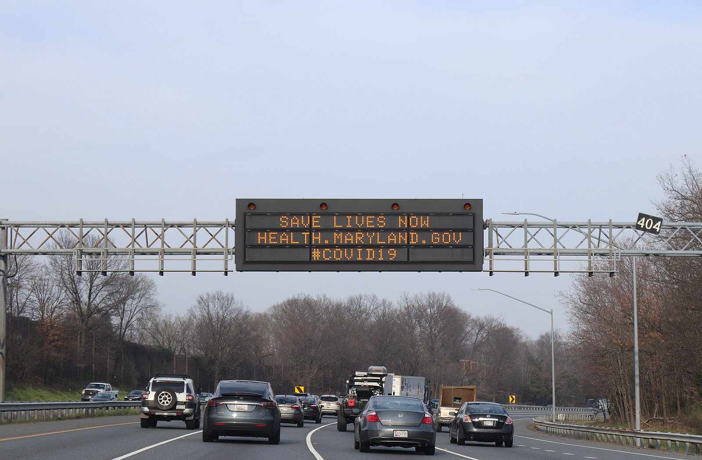

An aerial picture of Baltimore from June 2018, taken during a research flight to study air quality. Studies this year indicated a decrease in air pollution during the early months of the coronavirus pandemic. (File photo courtesy of Sarah Benish.)
Story by Rachel Clair
Levels of noxious pollutants were markedly lower: nitrogen oxide decreased around 15 percent, and carbon dioxide and carbon monoxide by 30 percent each from roughly mid-February to late May following plummets in traffic due to Gov. Larry Hogan’s stay-at-home orders, joblessness, an increase in telework and closed school buildings.
Traffic also decreased — registering between 50 and 80 percent fewer Vehicle Miles Travelled according to preliminary data — since the early weeks of the pandemic in Maryland, according to the study.
A pollutant called “black carbon” — tied largely to diesel fuel — decreased 30 percent during a two-month period, though data indicated that truck traffic decreased less than from other vehicles.
The state’s environment department, working closely with the University of Maryland, NASA and other government agencies and university researchers, used satellites, air samples from airplanes, roadside monitoring and traffic data to calculate the effects of the pandemic on the state’s air quality. Much of the data was collected from mid- to late-March through late May.
Researchers took into account pollution decreases that would normally occur with changes in weather, established teleworking and commuting trends and other expected changes to determine what was likely a result of the pandemic.
The significant decreases in air pollution are not surprising, according to Maryland Secretary of the Environment Ben Grumbles, as traffic on I-95 alone was down 50 percent at the beginning of March.
COVID-19 "SAVE LIVES" sign along I-95 in Baltimore, Maryland. Photo taken March 19, 2020, by Elvert Barnes Photography.
Now, as COVID restrictions are gradually being lifted, the main issue is how this reduction in air pollution is maintained when today’s “stay-at-home” reality moves into the past.
Grumbles, in an interview late last month with Capital News Service, pinpointed two key measures to keep air pollution at a reasonable minimum: teleworking and wide support for zero emissions vehicles.
Making teleworking more common and a routine in people’s lives is a way to maintain at least part of this drop, according to Grumbles.
“(C)ommon sense efforts to expand telework policies could generate significant reductions in (greenhouse gas) emissions,” the researchers found.
There is no denying the decrease in greenhouse gas emissions was a direct effect of people staying at home and traveling less, so teleworking is “the wave of the future,” Grumbles said.
The pandemic has created a stronger argument in favor of more zero-emissions vehicles in Maryland.
Currently there are around 26,000 zero-emissions vehicles in Maryland, according to the Maryland Department of Environment website.
Maryland has a goal to reach 300,000 electric vehicles by 2025 to have a substantial impact on the environment, Grumbles said.
Maryland and other states signed on to adhere to these principles. Northeastern states also partnered to create an action plan and set specific goals for zero-emissions vehicles.
“This is an audacious and ambitious goal but it is an excellent goal. However, we need game-changers to help with this,” said Grumbles.
Air pollution is especially relevant in a pandemic where the virus is usually evident as a respiratory infection.
Public transportation and investment in this sector will be one way to achieve lower air pollution levels, according to Director of Environment Maryland Kate Breiman, who said people need to find a greener way to get around.
The Hogan administration has looked to invest in not just green cars, but more environmentally friendly buses and trucks. In July, Maryland and 15 other states signed an agreement to increase the number of zero-emissions vehicles on the roads, according to the director of the Maryland Department of Environment’s Air and Radiation Management Administration Tad Aburn.
A combination of long-term solutions is key to maintaining the reductions seen in 2020, Aburn said.